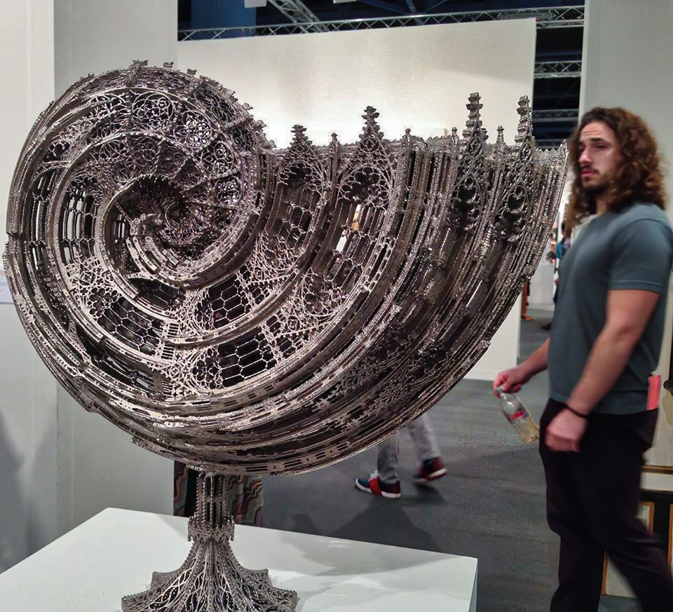

Hello World!
Today is Cloudy
Bats, of the order Chiroptera, are the only mammals capable of sustained flight. Their wings, spread-out fingers covered by a thin membrane, make them more manoeuvrable than birds. Bats range in size from Kitti's hog-nosed bat, weighing 2–2.6 g (0.07–0.09 oz), to the giant golden-crowned flying fox, up to 1.6 kg (4 lb) with a wingspan of up to 1.
7 m (5 ft 7 in). The second largest order of mammals after rodents, bats comprise about 20% of all mammal species, with over 1,200 species distributed across the world. Most bats are nocturnal. They are mostly insect- or fruit-eaters, but some are carnivorous, such as vampire bats. Some are important for pollinating flowers and dispersing seeds; others consume insect pests, reducing the need for pesticides. Bats harbour the agents of many communicable diseases, such as rabies and coronaviruses. They are often associated with darkness, malevolence, vampires, and death.
unordered list
Ordered List
Description List
Nested List
Wikipedia is an encyclopedia
link will open in new tab
Click here for more info
